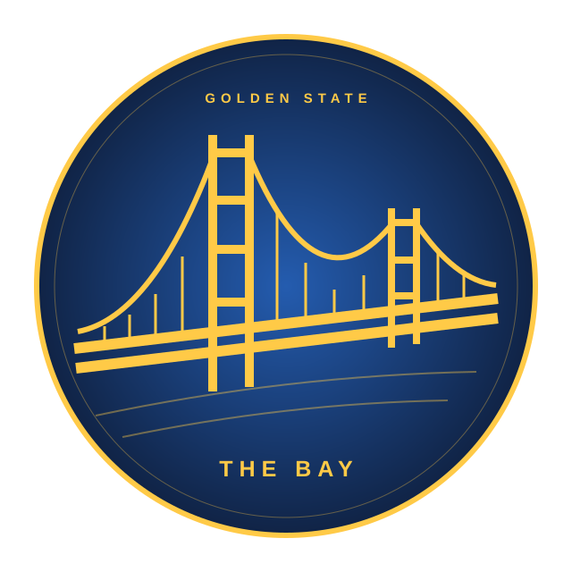

BEYOND THE COURT / 籃球・人物・故事THE GAME.
THE GAME.
AND BEYOND.
從球隊出發，看見籃球的每一面。
比分記錄勝負，故事讓我們留下。
選一支球隊，走進場上的數據與場下的人生。
THE TEAMS / 球隊專題
01 TEAM / GOLDEN STATE找到你的主場。

WESTERN CONFERENCESAN FRANCISCO, CALIFORNIAGOLDEN STATE
GOLDEN STATE
WARRIORS
金州勇士
從每一次上場，到球衣之外的故事。認識勇士全員，探索比賽與人物的另一面。
18 位球員9 場比賽20 篇故事
進入勇士專頁 ↗